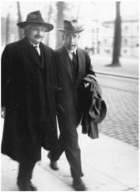

With Bohr at the 1930 Solvay Conference
While others continued to develop quantum mechanics, undaunted by the uncertainties at its core, Einstein persevered in his lonelier quest for a more complete explanation of the universe—a unified field theory that would tie together electricity and magnetism and gravity and quantum mechanics. In the past, his genius had been in finding missing links between different theories. The opening sentences of his 1905 general relativity and light quanta papers were such examples.*
He hoped to extend the gravitational field equations of general relativity so that they would describe the electromagnetic field as well. “The mind striving after unification cannot be satisfied that two fields should exist which, by their nature, are quite independent,” Einstein explained in his Nobel lecture. “We seek a mathematically unified field theory in which the gravitational field and the electromagnetic field are interpreted only as different components or manifestations of the same uniform field.”1
Such a unified theory, he hoped, might make quantum mechanics compatible with relativity. He publicly enlisted Planck in this task with a toast at his mentor’s sixtieth birthday celebration in 1918: “May he succeed in uniting quantum theory with electrodynamics and mechanics in a single logical system.”2
Einstein’s quest was primarily a procession of false steps, marked by increasing mathematical complexity, that began with his reacting to the false steps of others. The first was by the mathematical physicist Hermann Weyl, who in 1918 proposed a way to extend the geometry of general relativity that would, so it seemed, serve as a geometrization of the electromagnetic field as well.
Einstein was initially impressed. “It is a first-class stroke of genius,” he told Weyl. But he had one problem with it: “I have not been able to settle my measuring-rod objection yet.”3
Under Weyl’s theory, measuring rods and clocks would vary depending on the path they took through space. But experimental observations showed no such phenomenon. In his next letter, after two more days of reflection, Einstein pricked his bubbles of praise with a wry putdown. “Your chain of reasoning is so wonderfully self-contained,” he wrote Weyl. “Except for agreeing with reality, it is certainly a grand intellectual achievement.”4
Next came a proposal in 1919 by Theodor Kaluza, a mathematics professor in Königsberg, that a fifth dimension be added to the four dimensions of spacetime. Kaluza further posited that this added spatial dimension was circular, meaning that if you head in its direction you get back to where you started, just like walking around the circumference of a cylinder.
Kaluza did not try to describe the physical reality or location of this added spatial dimension. He was, after all, a mathematician, so he didn’t have to. Instead, he devised it as a mathematical device. The metric of Einstein’s four-dimensional spacetime required ten quantities to describe all the possible coordinate relationships for any point. Kaluza knew that fifteen such quantities are needed to specify the geometry for a five-dimensional realm.5
When he played with the math of this complex construction, Kaluza found that four of the extra five quantities could be used to produce Maxwell’s electromagnetic equations. At least mathematically, this might be a way to produce a field theory unifying gravity and electromagnetism.
Once again, Einstein was both impressed and critical. “A five-dimensional cylinder world never dawned on me,” he wrote Kaluza. “At first glance I like your idea enormously.”6 Unfortunately, there was no reason to believe that most of this math actually had any basis in physical reality. With the luxury of being a pure mathematician, Kaluza admitted this and challenged the physicists to figure it out. “It is still hard to believe that all of these relations in their virtually unsurpassed formal unity should amount to the mere alluring play of a capricious accident,” he wrote. “Should more than an empty mathematical formalism be found to reside behind these presumed connections, we would then face a new triumph of Einstein’s general relativity.”
By then Einstein had become a convert to the faith in mathematical formalism, which had proven so useful in his final push toward general relativity. Once a few issues were sorted out, he helped Kaluza get his paper published in 1921, and followed up later with his own pieces.
The next contribution came from the physicist Oskar Klein, son of Sweden’s first rabbi and a student of Niels Bohr. Klein saw a unified field theory not only as a way to unite gravity and electromagnetism, but he also hoped it might explain some of the mysteries lurking in quantum mechanics. Perhaps it could even come up with a way to find “hidden variables” that could eliminate the uncertainty.
Klein was more a physicist than a mathematician, so he focused more than Kaluza had on what the physical reality of a fourth spatial dimension might be. His idea was that it might be coiled up in a circle, too tiny to detect, projecting out into a new dimension from every point in our observable three-dimensional space.
It was all quite ingenious, but it didn’t turn out to explain much about the weird but increasingly well-confirmed insights of quantum mechanics or the new advances in particle physics. The Kaluza-Klein theories were put aside, although Einstein over the years would return to some of the concepts. In fact, physicists still do today. Echoes of these ideas, particularly in the form of extra compact dimensions, exist in string theory.
Next into the fray came Arthur Eddington, the British astronomer and physicist responsible for the famous eclipse observations. He refined Weyl’s math by using a geometric concept known as an affine connection. Einstein read Eddington’s ideas while on his way to Japan, and he adopted them as the basis for a new theory of his own. “I believe I have finally understood the connection between electricity and gravitation,” he wrote Bohr excitedly. “Eddington has come closer to the truth than Weyl.”7
By now the siren song of a unified theory had come to mesmerize Einstein. “Over it lingers the marble smile of nature,” he told Weyl.8On his steamer ride through Asia, he polished a new paper and, upon arriving in Egypt in February 1923, immediately mailed it to Planck in Berlin for publication. His goal, he declared, was “to understand the gravitational and electromagnetic field as one.”9
Once again, Einstein’s pronouncements made headlines around the world. “Einstein Describes His Newest Theory,” proclaimed the New York Times. And once again, the complexity of his approach was played up. As one of the subheads warned: “Unintelligible to Laymen.”
But Einstein told the newspaper it was not all that complicated. “I can tell you in one sentence what it is about,” the reporter quoted him as saying. “It concerns the relation between electricity and gravitation.” He also gave credit to Eddington, saying, “It is grounded on the theories of the English astronomer.”10
In his follow-up articles that year, Einstein made explicit that his goal was not merely unification but finding a way to overcome the uncertainties and probabilities in quantum theory. The title of one 1923 paper stated the quest clearly: “Does the Field Theory Offer Possibilities for the Solution of Quanta Problems?”11
The paper began by describing how electromagnetic and gravitational field theories provide causal determinations based on partial differential equations combined with initial conditions. In the realm of the quanta, it may not be possible to choose or apply the initial conditions freely. Can we nevertheless have a causal theory based on field equations?
“Quite certainly,” Einstein answered himself optimistically. What was needed, he said, was a method to “overdetermine” the field variables in the appropriate equations. That path of overdetermination became yet another proposed tool that he would employ, to no avail, in fixing what he persisted in calling the “problem” of quantum uncertainty.
Within two years, Einstein had concluded that these approaches were flawed. “My article published [in 1923],” he wrote, “does not reflect the true solution of this problem.” But for better or worse, he had come up with yet another method. “After searching ceaselessly in the past two years, I think I have now found the true solution.”
His new approach was to find the simplest formal expression he could of the law of gravitation in the absence of any electromagnetic field and then generalize it. Maxwell’s theory of electromagnetism, he thought, resulted in a first approximation.12
He now was relying more on math than on physics. The metric tensor that he had featured in his general relativity equations had ten independent quantities, but if it were made nonsymmetrical there would be sixteen of them, enough to accommodate electromagnetism.
But this approach led nowhere, just like the others. “The trouble with this idea, as Einstein became painfully aware, is that there really is nothing in it that ties the 6 components of the electric and magnetic fields to the 10 components of the ordinary metric tensor that describes gravitation,” says University of Texas physicist Steven Weinberg. “A Lorentz transformation or any other coordinate transformation will convert electric or magnetic fields into mixtures of electric and magnetic fields, but no transformation mixes them with the gravitational field.”13
Undaunted, Einstein went back to work, this time trying an approach he called “distant parallelism.” It permitted vectors in different parts of curved space to be related, and from that sprang new forms of tensors. Most wondrously (so he thought), he was able to come up with equations that did not require that pesky Planck constant representing quanta.14
“This looks old-fashioned, and my dear colleagues, and also you, will stick their tongues out because Planck’s constant is not in the equations,” he wrote Besso in January 1929. “But when they have reached the limit of their mania for the statistical fad, they will return full of repentance to the spacetime picture, and then these equations will form a starting point.”15
What a wonderful dream! A unified theory without that rambunctious quantum. Statistical approaches turning out to be a passing mania. A return to the field theories of relativity. Tongue-sticking colleagues repenting!
In the world of physics, where quantum mechanics was now accepted, Einstein and his fitful quest for a unified theory were beginning to be seen as quaint. But in the popular imagination, he was still a superstar. The frenzy that surrounded the publication of his January 1929 five-page paper, which was merely the latest in a string of theoretical stabs that missed the mark, was astonishing. Journalists from around the world crowded around his apartment building, and Einstein was barely able to escape them to go into hiding at his doctor’s villa on the Havel River outside of town. The New York Times had started the drumbeat weeks earlier with an article headlined “Einstein on Verge of Great Discovery: Resents Intrusion.”16
Einstein’s paper was not made public until January 30, 1929, but for the entire preceding month the newspapers printed a litany of leaks and speculation. A sampling of the headlines in the New York Times, for example, include these:
January 12: “Einstein Extends Relativity Theory / New Work Seeks to Unite Laws of Field of Gravitation and Electro-Magnetism / He Calls It His Greatest ‘Book’ / Took Berlin Scientist Ten Years to Prepare”
January 19: “Einstein Is Amazed at Stir Over Theory / Holds 100 Journalists at Bay for a Week / BERLIN—For the past week the entire press as represented here has concentrated efforts on procuring the five-page manuscript of Dr. Albert Einstein’s ‘New Field of Theory.’ Furthermore, hundreds of cables from all parts of the world, with prepaid answers and innumerable letters asking for a detailed description or a copy of the manuscript have arrived.”
January 25 (page 1): “Einstein Reduces All Physics to One Law / The New Electro-Gravitational Theory Links All Phenomena, Says Berlin Interpreter / Only One Substance Also / Hypothesis Opens Visions of Persons Being Able to Float in Air, Says N.Y.U. Professor / BERLIN—Professor Albert Einstein’s newest work, ‘A New Field Theory,’ which will leave the press soon, reduces to one formula the basic laws of relativistic mechanics and of electricity, according to the person who has interpreted it into English.”
Einstein got into the act from his Havel River hideaway. Even before his little paper was published, he gave an interview about it to a British newspaper. “It has been my greatest ambition to resolve the duality of natural laws into unity,” he said. “The purpose of my work is to further this simplification, and particularly to reduce to one formula the explanation of the gravitational and electromagnetic fields. For this reason I call it a contribution to ‘a unified field theory’... Now, but only now, we know that the force that moves electrons in their ellipses about the nuclei of atoms is the same force that moves our earth in its annual course around the sun.”17 Of course, it turned out that he did not know that, nor do we know that even now.
He also gave an interview to Time, which put him on its cover, the first of five such appearances. The magazine reported that, while the world waited for his “abstruse coherent field theory” to be made public, Einstein was plodding around his country hideaway looking “haggard, nervous, irritable.” His sickly demeanor, the magazine explained, was due to stomach ailments and a constant parade of visitors. In addition, it noted, “Dr. Einstein, like so many other Jews and scholars, takes no physical exercise at all.”18
The Prussian Academy printed a thousand copies of Einstein’s paper, an unusually large number. When it was released on January 30, all were promptly sold, and the Academy went back to the printer for three thousand more. One set of pages was pasted in the window of a London department store, where crowds pushed forward to try to comprehend the complex mathematical treatise with its thirty-three arcane equations not tailored for window shoppers. Wesleyan University in Connecticut paid a significant sum for the handwritten manuscript to be deposited as a treasure in its library.
American newspapers were somewhat at a loss. The New York Herald Tribune decided to print the entire paper verbatim, but it had trouble figuring out how to cable all the Greek letters and symbols over telegraph machines. So it hired some Columbia physics professors to devise a coding system and then reconstruct the paper in New York, which they did. The Tribune’ s colorful article about how they transmitted the paper was a lot more comprehensible to most readers than Einstein’s paper itself.19
The New York Times, for its part, raised the unified theory to a religious level by sending reporters that Sunday to churches around the city to report on the sermons about it. “Einstein Viewed as Near Mystic,” the headline declared. The Rev. Henry Howard was quoted as saying that Einstein’s unified theory supported St. Paul’s synthesis and the world’s “oneness.” A Christian Scientist said it provided scientific backing for Mary Baker Eddy’s theory of illusive matter. Others hailed it as “freedom advanced” and a “step to universal freedom.”20
Theologians and journalists may have been wowed, but physicists were not. Eddington, usually a fan, expressed doubts. Over the next year, Einstein kept refining his theory and insisting to friends that the equations were “beautiful.” But he admitted to his dear sister that his work had elicited “the lively mistrust and passionate rejection of my colleagues.”21
Among those who were dismayed was Wolfgang Pauli. Einstein’s new approaches “betrayed” his general theory of relativity, Pauli sharply told him, and relied on mathematical formalism that had no relation to physical realities. He accused Einstein of “having gone over to the pure mathematicians,” and he predicted that “within a year, if not before, you will have abandoned that whole distant parallelism, just as earlier you gave up the affine theory.”22
Pauli was right. Einstein gave up the theory within a year. But he did not give up the quest. Instead, he turned his attention to yet another revised approach that would make more headlines but not more headway in solving the great riddle he had set for himself. “Einstein Completes Unified Field Theory,” the New York Times reported on January 23, 1931, with little intimation that it was neither the first nor would it be the last time there would be such an announcement. And then again, on October 26 of that year: “Einstein Announces a New Field Theory.”
Finally, the following January, he admitted to Pauli, “So you were right after all, you rascal.”23
And so it went, for another two decades. None of Einstein’s offerings ever resulted in a successful unified field theory. Indeed, with the discoveries of new particles and forces, physics was becoming less unified. At best, Einstein’s effort was justified by the faint praise from the French mathematician Elie Joseph Cartan in 1931: “Even if his attempt does not succeed, it will have forced us to think about the great questions at the foundation of science.”24
The tenacious rearguard action that Einstein waged against the onslaught of quantum mechanics came to a climax at two memorable Solvay Conferences in Brussels. At both he played the provocateur, trying to poke holes in the prevailing new wisdom.
Present at the first, in October 1927, were the three grand masters who had helped launch the new era of physics but were now skeptical of the weird realm of quantum mechanics it had spawned: Hendrik Lorentz, 74, just a few months from death, the winner of the Nobel for his work on electromagnetic radiation; Max Planck, 69, winner of the Nobel for his theory of the quantum; and Albert Einstein, 48, winner of the Nobel for discovering the law of the photoelectric effect.
Of the remaining twenty-six attendees, more than half had won or would win Nobel Prizes as well. The boy wonders of the new quantum mechanics were all there, hoping to convert or conquer Einstein: Werner Heisenberg, 25; Paul Dirac, 25; Wolfgang Pauli, 27; Louis de Broglie, 35; and from America, Arthur Compton, 35. Also there was Erwin Schrödinger, 40, caught between the young Turks and the older skeptics. And, of course, there was the old Turk, Niels Bohr, 42, who had helped spawn quantum mechanics with his model of the atom and become the staunch defender of its counterintuitive ramifications.25
Lorentz had asked Einstein to present the conference’s report on the state of quantum mechanics. Einstein accepted, then balked. “After much back and forth, I have concluded that I am not competent to give such a report in a way that would match the current state of affairs,” he replied. “In part it is because I do not approve of the purely statistical method of thinking on which the new theories are based.” He then added rather plaintively, “I beg you not to be angry with me.”26
Instead, Niels Bohr gave the opening presentation. He was unsparing in his description of what quantum mechanics had wrought. Certainty and strict causality did not exist in the subatomic realm, he said. There were no deterministic laws, only probabilities and chance. It made no sense to speak of a “reality” that was independent of our observations and measurements. Depending on the type of experiment chosen, light could be waves or particles.
Einstein said little at the formal sessions. “I must apologize for not having penetrated quantum mechanics deeply enough,” he admitted at the very outset. But over dinners and late-night discussions, resuming again at breakfast, he would engage Bohr and his supporters in animated discourse that was leavened by affectionate banter about dice-playing deities. “One can’t make a theory out of a lot of ‘maybes,’ ” Pauli recalls Einstein arguing. “Deep down it is wrong, even if it is empirically and logically right.”27
“The discussions were soon focused to a duel between Einstein and Bohr about whether atomic theory in its present form could be considered to be the ultimate solution,” Heisenberg recalled.28 As Ehrenfest told his students afterward, “Oh, it was delightful.”29
Einstein kept lobbing up clever thought experiments, both in sessions and in the informal discussions, designed to prove that quantum mechanics did not give a complete description of reality. He tried to show how, through some imagined contraption, it would be possible, at least in concept, to measure all of the characteristics of a moving particle, with certainty.
For example, one of Einstein’s thought experiments involved a beam of electrons that is sent through a slit in a screen, and then the positions of the electrons are recorded as they hit a photographic plate. Various other elements, such as a shutter to open and close the slit instantaneously, were posited by Einstein in his ingenious efforts to show that position and momentum could in theory be known with precision.
“Einstein would bring along to breakfast a proposal of this kind,” Heisenberg recalled. He did not worry much about Einstein’s machinations, nor did Pauli. “It will be all right,” they kept saying, “it will be all right.” But Bohr would often get worked up into a muttering frenzy.
The group would usually make their way to the Congress hall together, working on ways to refute Einstein’s problem. “By dinner-time we could usually prove that his thought experiments did not contradict uncertainty relations,” Heisenberg recalled, and Einstein would concede defeat. “But next morning he would bring along to breakfast a new thought experiment, generally more complicated than the previous one.” By dinnertime that would be disproved as well.
Back and forth they went, each lob from Einstein volleyed back by Bohr, who was able to show how the uncertainty principle, in each instance, did indeed limit the amount of knowable information about a moving electron. “And so it went for several days,” said Heisenberg. “In the end, we—that is, Bohr, Pauli, and I—knew that we could now be sure of our ground.”30
“Einstein, I’m ashamed of you,” Ehrenfest scolded. He was upset that Einstein was displaying the same stubbornness toward quantum mechanics that conservative physicists had once shown toward relativity. “He now behaves toward Bohr exactly as the champions of absolute simultaneity had behaved toward him.”31
Einstein’s own remarks, given on the last day of the conference, show that the uncertainty principle was not the only aspect of quantum mechanics that concerned him. He was also bothered—and later would become even more so—by the way quantum mechanics seemed to permit action at a distance. In other words, something that happened to one object could, according to the Copenhagen interpretation, instantly determine how an object located somewhere else would be observed. Particles separated in space are, according to relativity theory, independent. If an action involving one can immediately affect another some distance away, Einstein noted, “in my opinion it contradicts the relativity postulate.” No force, including gravity, can propagate faster than the speed of light, he insisted.32
Einstein may have lost the debates, but he was still the star of the event. De Broglie had been looking forward to meeting him for the first time, and he was not disappointed. “I was particularly struck by his mild and thoughtful expression, by his general kindness, by his simplicity and by his friendliness,” he recalled.
The two hit it off well, because de Broglie was trying, like Einstein, to see if there were ways that the causality and certainty of classical physics could be saved. He had been working on what he called “the theory of the double solution,” which he hoped would provide a classical basis for wave mechanics.
“The indeterminist school, whose adherents were mainly young and intransigent, met my theory with cold disapproval,” de Broglie recalled. Einstein, on the other hand, appreciated de Broglie’s efforts, and he rode the train with him to Paris on his way back to Berlin.
At the Gare du Nord they had a farewell talk on the platform. Einstein told de Broglie that all scientific theories, leaving aside their mathematical expressions, ought to lend themselves to so simple a description “that even a child could understand them.” And what could be less simple, Einstein continued, than the purely statistical interpretation of wave mechanics! “Carry on,” he told de Broglie as they parted at the station. “You are on the right track!”
But he wasn’t. By 1928, a consensus had formed that quantum mechanics was correct, and de Broglie relented and adopted that view. “Einstein, however, stuck to his guns and continued to insist that the purely statistical interpretation of wave mechanics could not possibly be complete,” de Broglie recalled, with some reverence, years later.33
Indeed, Einstein remained the stubborn contrarian. “I admire to the highest degree the achievements of the younger generation of physicists that goes by the name quantum mechanics, and I believe in the deep level of truth of that theory,” he said in 1929 when accepting the Planck medal from Planck himself. “But”—and there was always a but in any statement of support Einstein gave to quantum theory—“I believe that the restriction to statistical laws will be a passing one.”34
The stage was thus set for an even more dramatic Solvay showdown between Einstein and Bohr, this one at the conference of October 1930. Theoretical physics has rarely seen such an interesting engagement.
This time, in his effort to stump the Bohr-Heisenberg group and restore certainty to mechanics, Einstein devised a more clever thought experiment. One aspect of the uncertainty principle, previously mentioned, is that there is a trade-off between measuring precisely the momentum of a particle and its position. In addition, the principle says that a similar uncertainty is inherent in measuring the energy involved in a process and the time duration of that process.
Einstein’s thought experiment involved a box with a shutter that could open and shut so rapidly that it would allow only one photon to escape at a time. The shutter is controlled by a precise clock. The box is weighed exactly. Then, at a certain specified moment, the shutter opens and a photon escapes. The box is now weighed again. The relationship between energy and mass (remember, E=mc2) permitted a precise determination of the energy of the particle. And we know, from the clock, its exact time of departing the system. So there!
Of course, physical limitations would make it impossible to actually do such an experiment. But in theory, did it refute the uncertainty principle?
Bohr was shaken by the challenge. “He walked from one person to another, trying to persuade them all that this could not be true, that it would mean the end of physics if Einstein was right,” a participant recorded. “But he could think of no refutation. I will never forget the sight of the two opponents leaving the university club. Einstein, a majestic figure, walking calmly with a faint ironic smile, and Bohr trotting along by his side, extremely upset.”35 (See picture, page 336.)
It was one of the great ironies of scientific debate that, after a sleepless night, Bohr was able to hoist Einstein by his own petard. The thought experiment had not taken into account Einstein’s own beautiful discovery, the theory of relativity. According to that theory, clocks in stronger gravitational fields run more slowly than those in weaker gravity. Einstein forgot this, but Bohr remembered. During the release of the photon, the mass of the box decreases. Because the box is on a spring scale (in order to be weighed), the box will rise a small amount in the earth’s gravity. That small amount is precisely the amount needed to restore the energy-time uncertainty relation.
“It was essential to take into account the relationship between the rate of a clock and its position in a gravitational field,” Bohr recalled. He gave Einstein credit for graciously helping to perform the calculations that, in the end, won the day for the uncertainty principle. But Einstein was never fully convinced. Even a year later, he was still churning out variations of such thought experiments.36
Quantum mechanics ended up proving to be a successful theory, and Einstein subsequently edged into what could be called his own version of uncertainty. He no longer denounced quantum mechanics as incorrect, only as incomplete. In 1931, he nominated Heisenberg and Schrödinger for the Nobel Prize. (They won in 1932 and 1933, along with Dirac.) “I am convinced that this theory undoubtedly contains a part of the ultimate truth,” Einstein wrote in his nominating letter.
Part of the ultimate truth. There was still, Einstein felt, more to reality than was accounted for in the Copenhagen interpretation of quantum mechanics.
Its shortcoming was that it “makes no claim to describe physical reality itself, but only the probabilities of the occurrence of a physical reality that we view,” he wrote that year in a tribute to James Clerk Maxwell, the master of his beloved field theory approach to physics. His piece concluded with a resounding realist credo—a direct denial of Bohr’s declaration that physics concerns not what nature is but merely “what we can say about nature”—that would have raised the eyebrows of Hume, Mach, and possibly even a younger Einstein. He declared, “Belief in an external world independent of the perceiving subject is the basis of all natural science.”37
In his more radical salad days, Einstein did not emphasize this credo. He had instead cast himself as an empiricist or positivist. In other words, he had accepted the works of Hume and Mach as sacred texts, which led him to shun concepts, like the ether or absolute time, that were not knowable through direct observations.
Now, as his opposition to the concept of an ether became more subtle and his discomfort with quantum mechanics grew, he edged away from this orthodoxy. “What I dislike in this kind of argumentation,” the older Einstein reflected, “is the basic positivistic attitude, which from my point of view is untenable, and which seems to me to come to the same thing as Berkeley’s principle, Esse est percipi.”*38
There was a lot of continuity in Einstein’s philosophy of science, so it would be wrong to insist that there was a clean shift from empiricism to realism in his thinking.39 Nonetheless, it is fair to say that as he struggled against quantum mechanics during the 1920s, he became less faithful to the dogma of Mach and more of a realist, someone who believed, as he said in his tribute to Maxwell, in an underlying reality that exists independently of our observations.
That was reflected in a lecture that Einstein gave at Oxford in June 1933, called “On the Method of Theoretical Physics,” which sketched out his philosophy of science.40 It began with a caveat. To truly understand the methods and philosophy of physicists, he said, “don’t listen to their words, fix your attention on their deeds.”
If we look at what Einstein did rather than what he was saying, it is clear that he believed (as any true scientist would) that the end product of any theory must be conclusions that can be confirmed by experience and empirical tests. He was famous for ending his papers with calls for these types of suggested experiments.
But how did he come up with the starting blocks for his theoretical thinking—the principles and postulates that would launch his logical deductions? As we’ve seen, he did not usually start with a set of experimental data that needed some explanation. “No collection of empirical facts, however comprehensive, can ever lead to the formulation of such complicated equations,” he said in describing how he had come up with the general theory of relativity.41 In many of his famous papers, he made a point of insisting that he had not relied much on any specific experimental data—on Brownian motion, or attempts to detect the ether, or the photoelectric effect—to induce his new theories.
Instead, he generally began with postulates that he had abstracted from his understanding of the physical world, such as the equivalence of gravity and acceleration. That equivalence was not something he came up with by studying empirical data. Einstein’s great strength as a theorist was that he had a keener ability than other scientists to come up with what he called “the general postulates and principles which serve as the starting point.”
It was a process that mixed intuition with a feel for the patterns to be found in experimental data. “The scientist has to worm these general principles out of nature by discerning, when looking at complexes of empirical facts, certain general features.”42 When he was struggling to find a foothold for a unified theory, he captured the essence of this process in a letter to Hermann Weyl: “I believe that, in order to make any real progress, one would again have to find a general principle wrested from Nature.”43
Once he had wrested a principle from nature, he relied on a byplay of physical intuition and mathematical formalism to march toward some testable conclusions. In his younger days, he sometimes disparaged the role that pure math could play. But during his final push toward a general theory of relativity, it was the mathematical approach that ended up putting him across the goal line.
From then on, he became increasingly dependent on mathematical formalism in his pursuit of a unified field theory. “The development of the general theory of relativity introduced Einstein to the power of abstract mathematical formalisms, notably that of tensor calculus,” writes the astrophysicist John Barrow. “A deep physical insight orchestrated the mathematics of general relativity, but in the years that followed the balance tipped the other way. Einstein’s search for a unified theory was characterized by a fascination with the abstract formalisms themselves.”44
In his Oxford lecture, Einstein began with a nod to empiricism: “All knowledge of reality starts from experience and ends in it.” But he immediately proceeded to emphasize the role that “pure reason” and logical deductions play. He conceded, without apology, that his success using tensor calculus to come up with the equations of general relativity had converted him to a faith in a mathematical approach, one that emphasized the simplicity and elegance of equations more than the role of experience.
The fact that this method paid off in general relativity, he said, “justifies us in believing that nature is the realization of the simplest conceivable mathematical ideas.”45 That is an elegant—and also astonishingly interesting—creed. It captured the essence of Einstein’s thought during the decades when mathematical “simplicity” guided him in his search for a unified field theory. And it echoed the great Isaac Newton’s declaration in book 3 of the Principia: “Nature is pleased with simplicity.”
But Einstein offered no proof of this creed, one that seems belied by modern particle physics.46 Nor did he ever fully explain what, exactly, he meant by mathematical simplicity. Instead, he merely asserted his deep intuition that this is the way God would make the universe. “I am convinced that we can discover by means of purely mathematical constructions the concepts and the laws connecting them with each other,” he claimed.
It was a belief—indeed, a faith—that he had expressed during his previous visit to Oxford, when in May 1931 he had been awarded an honorary doctorate there. In his lecture on that occasion, Einstein explained that his ongoing quest for a unified field theory was propelled by the lure of mathematical elegance, rather than the push of experimental data. “I have been guided not by the pressure from behind of experimental facts, but by the attraction in front from mathematical simplicity,” he said. “It can only be hoped that experiments will follow the mathematical flag.”47
Einstein likewise concluded his 1933 Oxford lecture by saying that he had come to believe that the mathematical equations of field theories were the best way to grasp “reality.” So far, he admitted, this had not worked at the subatomic level, which seemed ruled by chance and probabilities. But he told his audience that he clung to the belief that this was not the final word. “I still believe in the possibility of a model of reality—that is to say, of a theory that represents things themselves and not merely the probability of their occurrence.”48
Back in 1917, when Einstein had analyzed the “cosmological considerations” arising from his general theory of relativity, most astronomers thought that the universe consisted only of our Milky Way, floating with its 100 billion or so stars in a void of empty space. Moreover, it seemed a rather stable universe, with stars meandering around but not expanding outward or collapsing inward in a noticeable way.
All of this led Einstein to add to his field equations a cosmological constant that represented a “repulsive” force (see page 254). It was invented to counteract the gravitational attraction that would, if the stars were not flying away from one another with enough momentum, pull all of them together.
Then came a series of wondrous discoveries, beginning in 1924, by Edwin Hubble, a colorful and engaging astronomer working with the 100-inch reflector telescope at the Mount Wilson Observatory in the mountains above Pasadena, California. The first was that the blur known as the Andromeda nebula was actually another galaxy, about the size of our own, close to a million light years away (we now know it’s more than twice that far). Soon he was able to find at least two dozen even more distant galaxies (we now believe that there are more than 100 billion of them).
Hubble then made an even more amazing discovery. By measuring the red shift of the stars’ spectra (which is the light wave counterpart to the Doppler effect for sound waves), he realized that the galaxies were moving away from us. There were at least two possible explanations for the fact that distant stars in all directions seemed to be flying away from us: (1) because we are the center of the universe, something that since the time of Copernicus only our teenage children believe; (2) because the entire metric of the universe was expanding, which meant that everything was stretching out in all directions so that all galaxies were getting farther away from one another.
It became clear that the second explanation was the case when Hubble confirmed that, in general, the galaxies were moving away from us at a speed that was proportional to their distance from us. Those twice as far moved away twice as fast, and those three times as far moved away three times as fast.
One way to understand this is to imagine a grid of dots that are each spaced an inch apart on the elastic surface of a balloon. Then assume that the balloon is inflated so that the surface expands to twice its original dimensions. The dots are now two inches away from each other. So during the expansion, a dot that was originally one inch away moved another one inch away. And during that same time period, a dot that was originally two inches away moved another two inches away, one that was three inches away moved another three inches away, and one that was ten inches away moved another ten inches away. The farther away each dot was originally, the faster it receded from our dot. And that would be true from the vantage point of each and every dot on the balloon.
All of which is a simple way to say that the galaxies are not merely flying away from us, but instead, the entire metric of space, or the fabric of the cosmos, is expanding. To envision this in 3-D, imagine that the dots are raisins in a cake that is baking and expanding in all directions.
On his second visit to America in January 1931, Einstein decided to go to Mount Wilson (conveniently up the road from Caltech, where he was visiting) to see for himself. He and Edwin Hubble rode in a sleek Pierce-Arrow touring car up the winding road. There at the top to meet him was the aging and ailing Albert Michelson, of ether-drift experiment fame.
It was a sunny day, and Einstein merrily played with the telescope’s dials and instruments. Elsa came along as well, and it was explained to her that the equipment was used to determine the scope and shape of the universe. She reportedly replied, “Well, my husband does that on the back of an old envelope.”49
The evidence that the universe was expanding was presented in the popular press as a challenge to Einstein’s theories. It was a scientific drama that captured the public imagination. “Great stellar systems,” an Associated Press story began, “rushing away from the earth at 7,300 miles a second, offer a problem to Dr. Albert Einstein.”50
But Einstein welcomed the news. “The people at the Mt. Wilson observatory are outstanding,” he wrote Besso. “They have recently found that the spiral nebulae are distributed approximately uniformly in space, and they show a strong Doppler effect, proportional to their distances, that one can readily deduce from general relativity theory without the ‘cosmological’ term.”
In other words, the cosmological constant, which he had reluctantly concocted to account for a static universe, was apparently not necessary, for the universe was in fact expanding.* “The situation is truly exciting,” he exulted to Besso.51
Of course, it would have been even more exciting if Einstein had trusted his original equations and simply announced that his general theory of relativity predicted that the universe is expanding. If he had done that, then Hubble’s confirmation of the expansion more than a decade later would have had as great an impact as when Eddington confirmed his prediction of how the sun’s gravity would bend rays of light. The Big Bang might have been named the Einstein Bang, and it would have gone down in history, as well as in the popular imagination, as one of the most fascinating theoretical discoveries of modern physics.52
As it was, Einstein merely had the pleasure of renouncing the cosmological constant, which he had never liked.53 In a new edition of his popular book on relativity published in 1931, he added an appendix explaining why the term he had pasted into his field equations was, thankfully, no longer necessary.54 “When I was discussing cosmological problems with Einstein,” George Gamow later recalled, “he remarked that the introduction of the cosmological term was the biggest blunder he ever made in his life.”55
In fact, Einstein’s blunders were more fascinating and complex than even the triumphs of lesser scientists. It was hard simply to banish the term from the field equations. “Unfortunately,” says Nobel laureate Steven Weinberg, “it was not so easy just to drop the cosmological constant, because anything that contributes to the energy density of the vacuum acts just like a cosmological constant.”56
It turns out that the cosmological constant not only was difficult to banish but is still needed by cosmologists, who use it today to explain the accelerating expansion of the universe.57 The mysterious dark energy that seems to cause this expansion behaves as if it were a manifestation of Einstein’s constant. As a result, two or three times each year fresh observations produce reports that lead with sentences along the lines of this one from November 2005: “The genius of Albert Einstein, who added a ‘cosmological constant’ to his equation for the expansion of the universe but then retracted it, may be vindicated by new research.”58